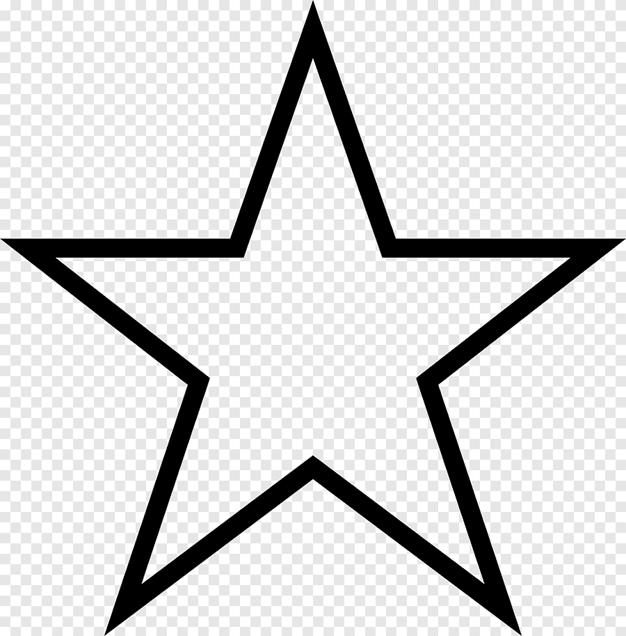

Guardar artículos para leerlos más tarde
Para guardar un artículo, haz clic en el icono de estrella que aparece debajo del resultado de búsqueda.
Una publicación interesante para leerla más tarde
Autores - Revista, 2017 - Editor

Citado por 101
|
Artículos relacionados
Para ver los artículos que has guardado, inicia sesión y haz clic en Mi biblioteca.